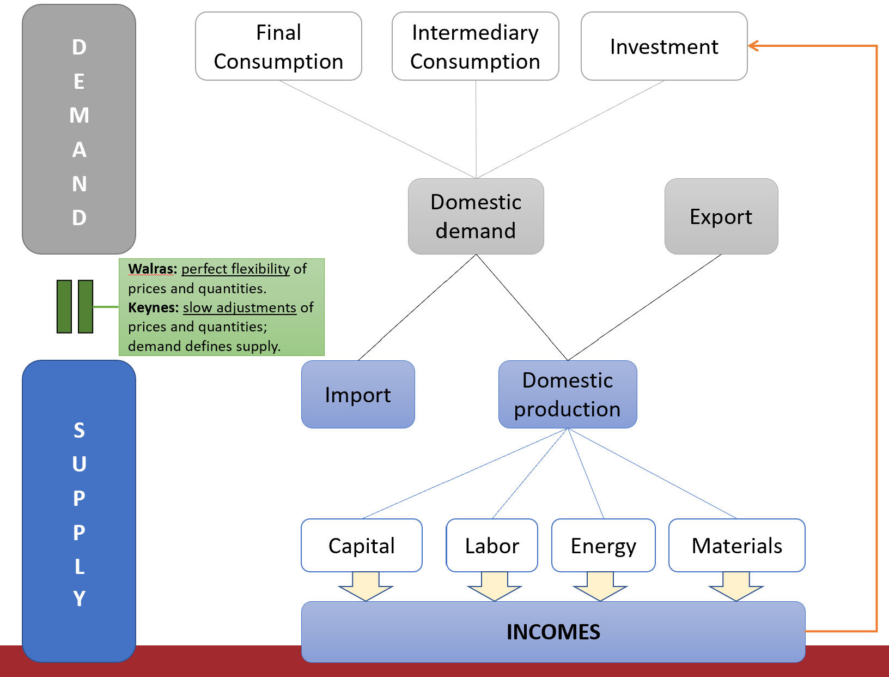
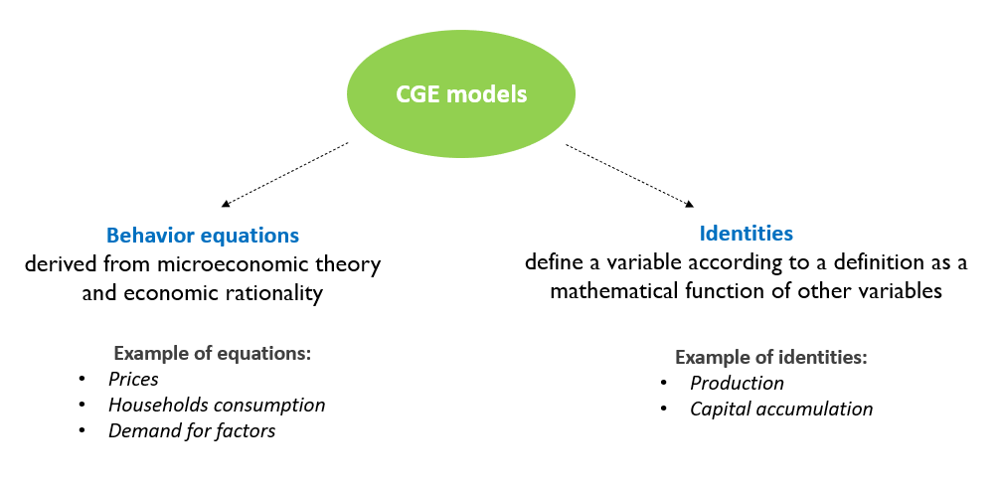
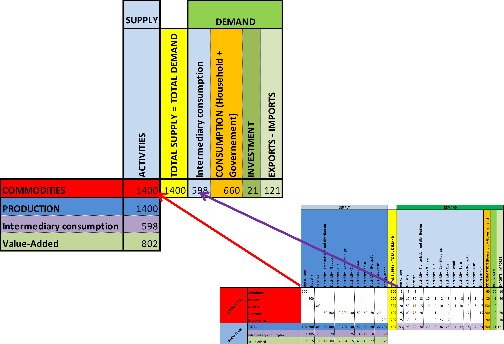

Taller: Modelos de Equilibrio General Neokeynesianos Dinámicos en R
Universidad Iberoamericana Ciudad de México
Theory Session 1.1
Introduction to CGE models and their usage
Universidad Iberoamericana Ciudad de México
Theory Session 1.1
Introduction to CGE models and their usage
dimanche 3 novembre 2024
What is a CGE model?
What is a CGE model?
Main usage of CGE models
Micro-economic foundations
Definition
Computable: numerical simulation
General: take into account the interactions between markets.
- Supply and demand influence each other
Equilibrium: Supply is equal to demand on all markets (good, production factors)
Structure of a CGE model (see next Figure):
- Demand (Consumption, investment) defines the supply (production)
- Supply defines in return the demand through the incomes generated by the production factors
CGE model
What does « general equilibrium » mean?
General Equilibrium relates to a state where supply is equal to demand in all markets
2 main approaches to insure this state:
- Walrasian models
The equilibrium force is the price system
Perfect price flexibility insure the instantaneous equilibrium between supply and demand
When the supply of a commodity goes down, its price tends to go up, thereby stimulating additional supply and depressing demand, until supply and demand are equal again.
Static model
- Neo-Keynesian models
- Demand determines supply
- Price and quantities are rigid and adjust slowly
- Disequilibrium between notional (optimal) supply and the actual supply in the short run
- Dynamic model: transition to the long run
- Walrasian models
A neo-keynesian CGE model
Slow adjustment of price and quantity
- Adjustment costs
- Empirically firms adjust their production to the demand rather than their price
Leads to situation of disequilibrium between the desired supply and demand
Prices are defined as a mark-up over the firm’s production costs
- Production costs integrate intermediary consumption (material and energy), labor and capital costs
A neo-keynesian CGE model
Wages are determined by a Wage Setting (WS) curve
- Phillips curve: wages increase with inflation and decrease with unemployment
- Wages do not adjust instantaneously the supply and demand for labor:
- Permanent underemployment equilibrium possible
- Theory of the NAIRU (Non Accelerating Inflation Rate of Unemployment) or Equilibrium rate of unemployment
The interest rate does not equilibrate instantaneously saving and investment:
- It is defined by the Central Bank
- « Taylor » reaction function: increases with inflation, decreases with unemployment
Main usage of CGE models
What is a CGE model?
Main usage of CGE models
Micro-economic foundations
Macroeconomic versus multisector CGE models
Computable General Equilibrium (CGE) models are widely used in economic policy analysis.
Macroeconomic CGE models focus on understanding how an entire economy responds to shocks or policy changes, such as fiscal or monetary policy adjustments, trade policies, or large-scale events like natural disasters. They analyze key economic indicators like GDP, inflation, employment, and investment, aiming to capture interdependencies among aggregate economic variables.
Multisector CGE models, on the other hand, break down the economy into specific sectors (e.g., agriculture, industry, services) to analyze the effects of policy changes or shocks on each sector individually. This version is particularly useful in trade policy, environmental regulation, or energy policy, as it highlights how impacts may vary across sectors, thereby allowing for targeted policy insights.
Examples of applications of the R package
Small size models
Small CGE model
Today’s course
Large size models
Multi-sector ThreeME models : open source model ThreeME (www.threeme.org)
Econometric models (Opale and Mesange)
- Quarterly models for short term forcast
Overview of ThreeME
Multi-sector Macroeconomic Model for the Evaluation of Environmental and Energy policy.
Open source model
Download and documentation: https://www.threeme.org/
ThreeME is neo-Keynesian general equilibrium model.
Micro-economic foundations
What is a CGE model?
Main usage of CGE models
Micro-economic foundations
Behavior equations versus identities
- CGE models have behavioral and identity equations
- Behavioral equations derive from microeconomic theory and economic rationality
- Economic behavior of producers, consumers, and other agents in the model
- Identity equations define a variable according to a definition as a mathematical function (sum, product, etc.) of other variables
- Accountancy variables (e.g. GDP, price index), unemployment rate, etc.

Behavior equations
Prices
We assume oligopolistic competition à la Cournot where each producer defines its price in order to maximize its profit considering the price of the other producers as given:
The maximisation program is:
\[\begin{equation} max_y Π(y) = p(y).y - c(y) \end{equation}\]
where \(y\) is the production or demand adressed to the compagny, \(\pi(y)\) is the profit of the compagny, \(p(y)\) its price and \(c(y)\) the production cost. We assume \(p′(y)\) < 0, \(c′(y)\) > 0 and \(c′′(y)\) > 0
The result of the program maximization defines the optimum price that is equal to a markup over the production costs:
\[\begin{equation} p(y)= [1+ m^{up}].c'(y) \end{equation}\]
where the markup is: \[\begin{equation} m^{up}= 1/(\epsilon -1) \end{equation}\] and \(\epsilon\) the (absolute) price elasticity of demand
In perfect competition, markup is zero: \[\begin{equation} m^{up} = 0 \end{equation}\] so that the optimal price is equal to the marginal cost of production: \[\begin{equation} p(y)= c'(y) \end{equation}\]
Given that production costs equal total factor payments, the optimal price is therefore equal to the cost of capital and labor:
Households consumption
We assume that households supply labor and own the capital, for which they get their income (\(w.L + p.r.K\)) .
We assume that households wish to use a fixed share of their total income for consumption
\[\begin{equation} CH = \left( 1 - \sigma \right) . \frac{\left( w . L + p . r . K \right)}{p} \end{equation}\]
The consumer maximize its utility by allocating the income of a given period over several periods.
The maximization program is:
\[\begin{equation} max_{c_i} U(c_1, c_2, ... c_n)=\sum_{i=1}^{n} (\phi_i.c_i^{\frac{\rho-1}{\rho}})^{\frac{\rho}{\rho-1}} \end{equation}\]
\[\begin{equation} \ s.t \ \sum_{i=1}^{n} p_i.c_i = R \end{equation}\] where \(\rho\) is the elasticity of substitution, \(c_i\) the consumption of good \(i\) and \(R\) total income.
The resolution of this program gives the relationship between households consumption and total income :
\[\begin{equation} p_i.c_i= (\Phi_i)^{\rho}.(\frac{p_i}{P})^{1-\rho}.R \end{equation}\] where \((\Phi_i)^{\rho}.(\frac{p_i}{P})^{1-\rho}\) is the consumption share.
Considering only two periods: \(i=1\) (present) and \(i=2\) (future) and assuming a CES function with \(\rho=1\), we find that consumption is a constant share of income:
\[\begin{equation*} p_1.c_1 = \phi_1.R \end{equation*}\] with \(\phi_1\) = (1-\(\sigma\)) and \(\sigma\) the propensity to save.
Demand for production factors
The firm determines its demand for labor and capital by maximizing its profit, which is equivalent to minimizing its production cost taking into account the production function.
Assuming a CES production function, the constrained cost minimization program is:
where \(\rho\) is the elasticity of substitution between inputs.
The resolution of the program derives demand for factors expressed as follows:
Labor demand:
\[\begin{equation} L = \left( \frac{Y}{PROG^{L}} \right) . \left( \left( \varphi^{L} \right) ^ {\rho} \right) . \left( \frac{w}{\left( p . PROG^{L} \right)} \right) ^ {\left( -\rho \right)} \end{equation}\]
Capital demand:
Identities and defnitions
Production
\[\begin{equation} Y = CH + I + G \end{equation}\]
- Market equilibrium condition between supply and demand
- Accountancy equation that states that everything that is being produced (total supply) is « consumed », either as household’s consumption, investment or government spending (total demand)
Capital accumulation
- Given an initial capital stock (at \(t-1\)), the change in capital stock defines the capital stock in \(t\):
\[\begin{equation} \varDelta \left(K\right) = I_{t-1} - \delta . K_{t-1} \end{equation}\]
- The change in capital stock :
- Increases with the investment made in the previous period (\(I_{t-1}\))
- Decreases with the depreciation of the capital stock (\(\delta.K_{t-1}\))
- Increases with the investment made in the previous period (\(I_{t-1}\))
Cost of capital
We assume that the cost of capital is defined as the user cost of capital (or real rental price of capital services or the costs of holding capital) :
\[\begin{equation} c^{K} = p(\delta + r) \\ \end{equation}\]
where \(\delta\) is the depreciation rate of capital, \(r\) the interest rate and \(p\) the price of the investment.
- This equation may have several interpretations:
- It reflects the opportunity cost of holding capital, that is the cost of not been able to invest an existing financial wealth into another asset
- It assumes that capital is financed through bank credit and that the reimbursement of the debt corresponds to the depreciation of capital
Some definitions
- Endogenous variable: defined inside the model, as a result of the model simulation
- One equation for each endogenous variable
- Eg. production, consumption, prices, wages, etc.
- Exogenous variable: defined outside the model
- No equation in the model defining this variable: hypothesis of the model
- Eg. population, price of imports (for a one country model)
- Parameter: from a mathematical point of view, an exogenous variable that is generally constant
- Eg. elasticities (substitution, indexation, etc.), depreciation rate, tax rate, etc.
- Representative agent: an average relevant economic agent that follows an optimizing/rational economic behaviour
- Households, producers, government
- Optimize an objective: e.g. maximization of profit/utility/social welfare, minimization of cost
Macroeconomic closure
- A model is a way of explaining endogenous variables as function of exogenous variables.
- Making a choice of what is to be determined within the model (endogenous variables) and what is to be considered external to the model (exogenous variables) is called the model closure. Why does the choice of the model closure matter?
- It may define the direction of causality (which variables determine the others)
- It may have important implications on the properties and results of the model
- It may define the direction of causality (which variables determine the others)
What is the impact of an increase in public spending (multiplier of public expenditures) on the endogenous variables of the model depending on the choice of the closure ?
We compare the results for two contrasting model closures:
- The Walrasian model
- The Keynesian model
Walrasian versus Keynesian models
Common features for both models:
- General equilibrium: which means that supply equals demand in all markets.
- In both frameworks, the models consist of equations that solve for the endogenous variables, given the exogenous variables and parameters. A change in one or more exogenous variable or parameter will lead to adjustments in the endogenous variables so to solve the system of equations again. These solved values of all endogenous variables, constitute the outcome of the model .
Main difference between both models:
- The choice of endogenous variables. In the Walrasian framework some variables adjust while there are considered fixed in the Keynesian framework and vice-versa.
Note: Our definitions of the Walrasian and Keynesian closures may differ from those found in the literature inspired by the seminal work of Sen (1963). Contrary to this literature that consider a static case, we propose simulations based on a dynamic model including an equation for capital accumulation and where investment is endogenous in both the Walrasian and the Keynesian closure.
The Walrasian model
The model is based on a set of 7 equations with 7 endogenous variables:
Investment
\[\begin{equation} I = Y - CH - G \end{equation}\]Production
\[\begin{equation} Y . p = w . L + p . \left( \delta + r \right) . K \end{equation}\]Households’consumption
\[\begin{equation} CH = \left( 1 - \sigma \right) . \frac{\left( w . L + p . r . K \right)}{p} \end{equation}\]Wage
\[\begin{equation} w + L = \left( \frac{Y}{PROG^{L}} \right) . \left( \left( \varphi^{L} \right) ^ {\rho} \right) . \left( \frac{w}{\left( p . PROG^{L} \right)} \right) ^ {\left( -\rho \right)} + w \end{equation}\]Interest rate
\[\begin{equation} r + K = \left( \frac{Y}{PROG^{K}} \right) . \left( \left( \varphi^{K} \right) ^ {\rho} \right) . \left( \frac{\left( \delta + r \right)}{PROG^{K}} \right) ^ {\left( -\rho \right)} + r \end{equation}\]Capital (from accumulation equation)
\[\begin{equation} \varDelta \left(K\right) = I_{t-1} - \delta . K_{t-1} \end{equation}\]Price
\[\begin{equation} p=1 \end{equation}\]The price equation defines the price as numéraire (equal to 1). The price can therefore be seen as an exogenous variable. The model could be written as a set of 6 equations with 6 endogenous variables.
The Keynesian model
The model is based on a set of 6 equations with 6 endogenous variables:
- Production
\[\begin{equation} Y = CH + I + G \end{equation}\]
- Price
\[\begin{equation} p . Y = w . L + p . \left( \delta + r \right) . K^{n} \end{equation}\]
- Households consumption
\[\begin{equation} CH = \left( 1 - \sigma \right) . \frac{\left( w . L + p . r . K \right)}{p} \end{equation}\]
- Labor
\[\begin{equation} L = \left( \frac{Y}{PROG^{L}} \right) . \left( \left( \varphi^{L} \right) ^ {\rho} \right) . \left( \frac{w}{\left( p . PROG^{L} \right)} \right) ^ {\left( -\rho \right)} \end{equation}\]
- Capital (notional level from cost minimization of a CES function )
\[\begin{equation} K^{n} = \left( \frac{Y}{PROG^{K}} \right) . \left( \left( \varphi^{K} \right) ^ {\rho} \right) . \left( \frac{\left( \delta + r \right)}{PROG^{K}} \right) ^ {\left( -\rho \right)} \end{equation}\]
- Capital (effective level from capital accumulation)
\[\begin{equation} \varDelta \left(K\right) = I_{t-1} - \delta . K_{t-1} \end{equation}\]
- Investment
\[\begin{equation} \varDelta \left(\operatorname{log} I\right) = \varDelta \left(\operatorname{log} K^{n}_{t-1}\right) + \alpha^{I,Kn} . \operatorname{log} \frac{K^{n}_{t-1}}{K_{t-1}} \end{equation}\]
Comments on the Keynesian model closure
- In the Keynesian closure, the wage and the interest rate are exogenous whereas labor and capital are endogenous
- To represent the slow adjustment of price and quantities, it is convenient to distinguish between notional and effective level
- The notional levels are mentioned with the underscore (superscript) « n » in the model They refer to the level of price, consumption, labor and capital the producer and the consumer would like to reach immediately if there were no adjustment constraint
Data: Supply-Use (SU) and Input-Output (IO) tables
SU table says how much a given commodities is supplied by a given sector (Supply)
- Generally close to a diagonal matrix
IO table says how much a given commodities is purchased by a given sector (Demand)
- Not a diagonal matrix
Equilibrium between Supply and Demand (use)
- GDP = VA = Y – CI = C + I + X - M


Taller: Modelos de Equilibrio General Neokeynesianos Dinámicos en R
Universidad Iberoamericana Ciudad de México
Theory Session 1.1
Introduction to CGE models and their usage
Comments on the Walrasian model closure
Note: we consider a steady state economy (with growth rate = 0%)